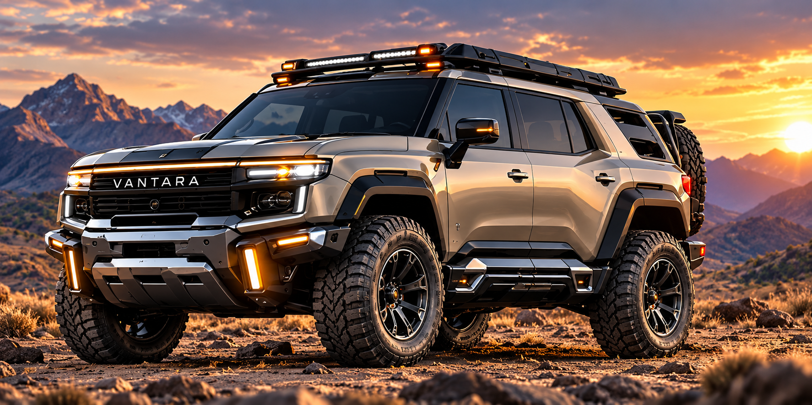

A rugged five-door adaptive vehicle concept built around four independently engineered wheel modules. The architecture is designed to alter ride height, lateral stance and terrain compliance while keeping the main passenger cell and primary vehicle systems on the sprung structure.

VANTARA is defined as a complete vehicle architecture, not only a suspension mechanism. The adaptive invention is integrated into the vehicle's chassis, controls, safety, powertrain and normal passenger-vehicle systems.
Each wheel corner uses a structural receiver, vertical lift system, lateral stance carrier, articulation joint, wheel/brake/steering interface, mechanical retention and independent position sensing.
Lift and stance actuators position the mechanisms. Structural guides, retention features and the chassis receiver carry defined road, braking, acceleration and lateral reactions.
A configuration becomes valid only when commanded state, measured position, mechanical retention and vehicle health agree across the required corners.
These are development states for the engineering architecture; they are not certification claims.
Lower ride height and narrower stance for urban operation.
Reference ride height and nominal stance for normal travel.
Increased ride height, wider stance and greater terrain compliance.
Development state for loaded, low-speed terrain operation within validated limits.
The vehicle definition includes the equipment and systems expected around the adaptive architecture.
Front and rear integrated safety modules are designed into the vehicle architecture, with directional visibility toward forward, rearward and lateral/oblique viewing zones. Final lighting performance must still be engineered and tested against the target-market regulations.
The VANTARA package is complete at preliminary engineering and acquisition-package level. The next real-world stage is detailed CAD/CAE, supplier-grade component definition, prototype fabrication, physical testing and professional IP/legal review.
Architecture, kinematics, load paths, retention, control logic, vehicle systems, materials/tolerance strategy, FMEA and validation programme.
No road-legal certification, crash certification, physical prototype validation or granted patent is claimed by this presentation.
The acquisition package includes the controlled engineering records, vehicle-level load model, FEA load-case definition, safety/control records, IP records and approved visual reference.